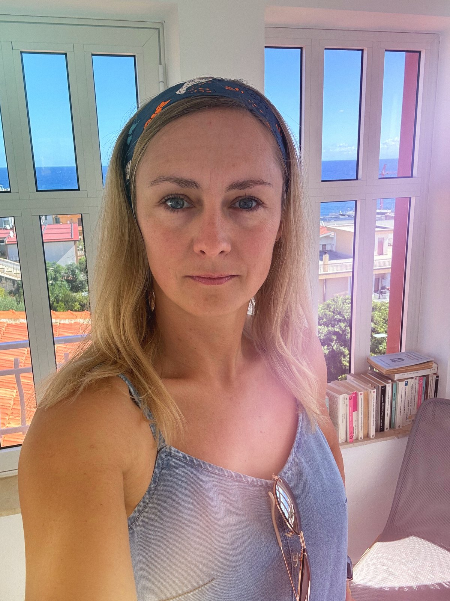
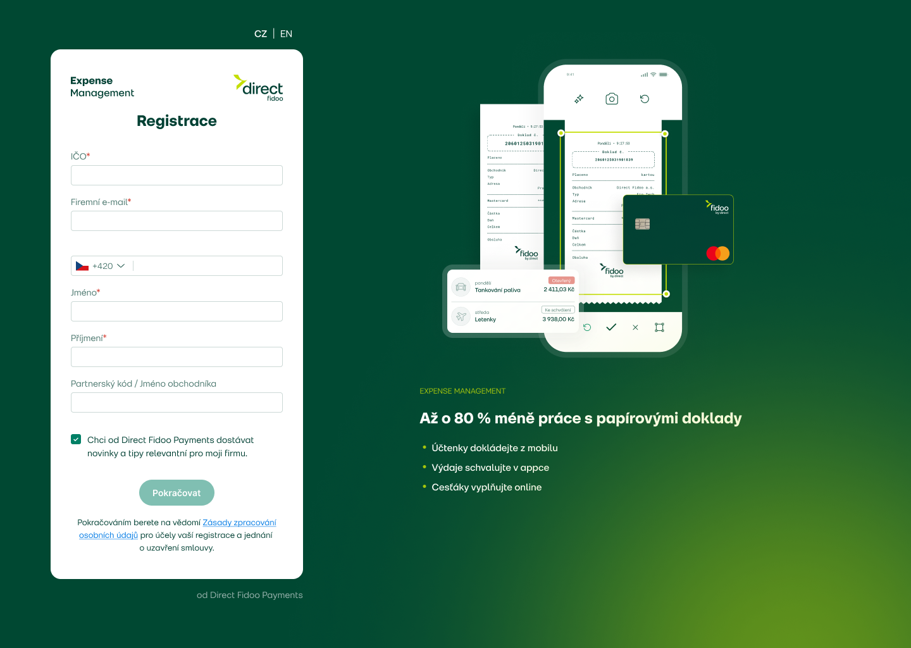
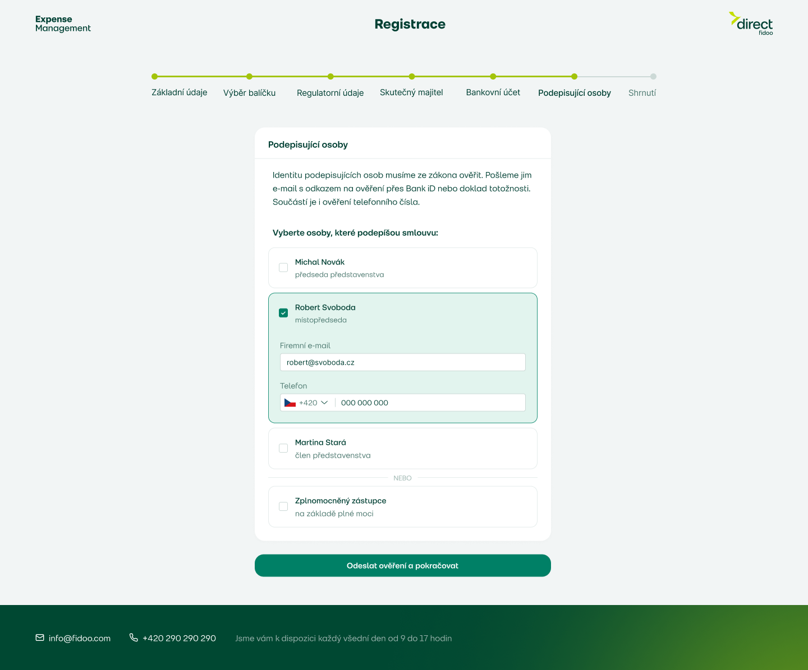
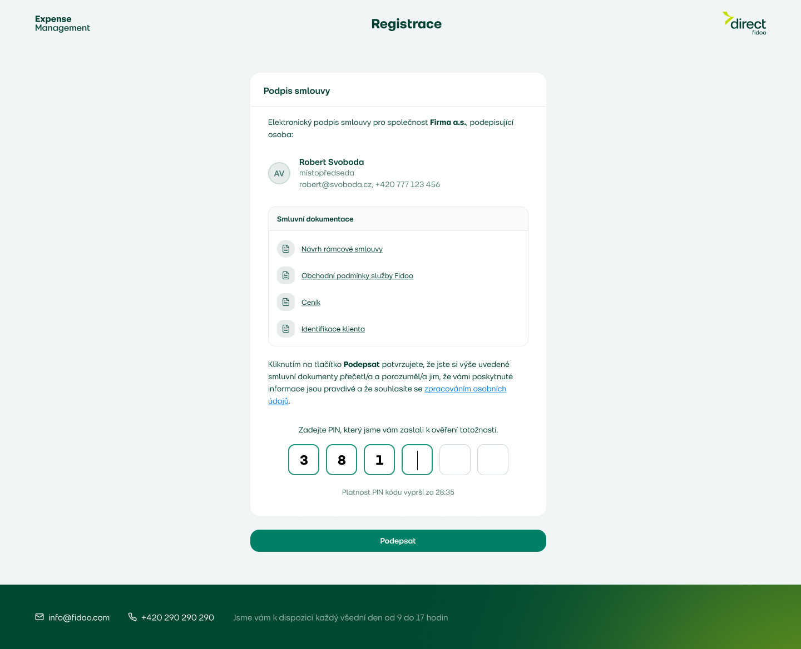
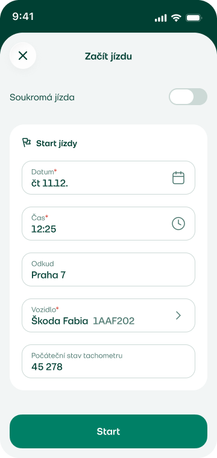
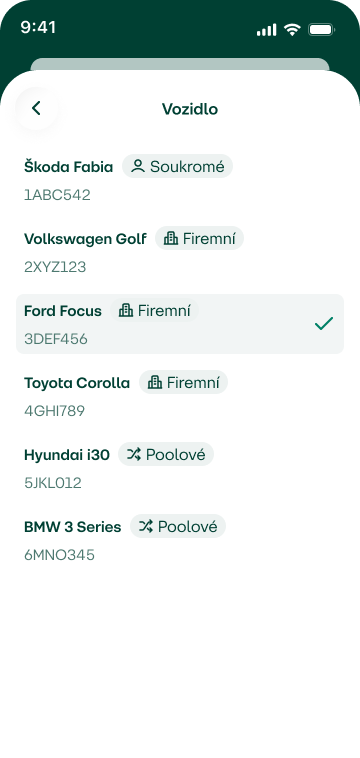
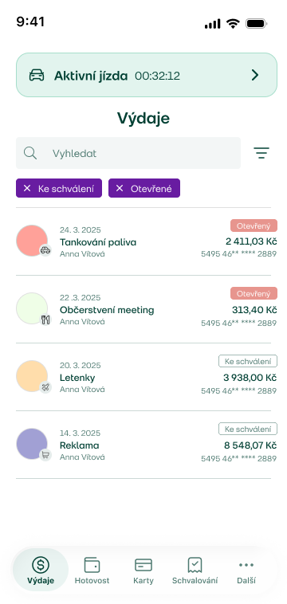
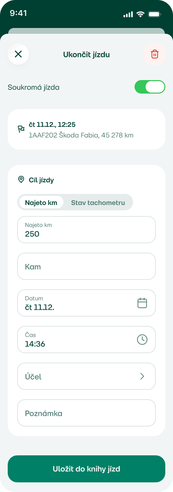

CREATIVE TECHNOLOGIST
UX/UI designérka s frontendovým backgroundem

Od frontendu jsem se dostala k UX/UI designu. Technické znalosti mi pomáhají navrhovat věci, které dávají smysl uživatelům i vývojářům. AI dnes používám naplno. Práci mi zrychluje, pomáhá ujasnit si myšlenky a hlídá konzistenci napříč designem i kódem.
K IT jsem se dostala díky Czechitas. Jednodenní workshop „Vytvoř si svůj web“ mě nadchl natolik, že jsem se přihlásila na půlroční kurz frontend kodérky, dala výpověď v práci office manažerky a šla to zkusit. Přes rok jsem pak v Mall.cz tvořila a spravovala kampaňové stránky napříč celou Mall skupinou v pěti zemích.
Potom přišlo Direct Fidoo a s ním Angular. Stavěla jsem HTML šablony a starala se o sdílené komponenty napříč nx monorepem pro tři aplikace. Zažila jsem dva brandové redesigny a postupně se přesunula na pozici UX/UI designérky, kde jsem navrhovala podobu a flow pro vývoj Fidoo aplikací.
Od září 2026 píšu novou kapitolu ve SmartEmailingu. Mám možnost podílet se na UX/UI rozvoji webové aplikace, stylování komponent a stavbě nového webu.
Self-onboarding klienta. Klienti si uzavírají smlouvu sami.
Důležitou součástí každé fintech aplikace je onboarding. Proces, ve kterém klient uzavře smlouvu a získá plný přístup do té aplikace. Ve Fidoo jsem byla u dvou návrhů onboardingu. Je to oblast, kde se potkává design s Compliance a právníky. Proces musí vyhovovat regulím, a hlavně se v něm uživatel nesmí ztratit a vzdát to. Náročná disciplína, ale aspoň mi teď nejsou cizí pojmy jako FATCA, AML, KYC nebo UBO. :)
Onboarding, který právě spouštíme, je první verze self-onboardingu pro produkt Expense Management. Menší firmy si díky němu uzavřou smlouvu s Fidoo samy. Do té doby to šlo jen s asistencí obchodníka, který celý onboarding s klientem vyplnil a pomohl produkt do firmy zavést.



Jak dostat Knihu jízd z desktopu do kapsy?
Live jízda vznikla ze zadání vytvořit MVP mobilní verze Knihy jízd, která do té doby žila jen v desktopové aplikaci Fidoo. Knihu jízd používají lidé, kteří jezdí služebním autem nebo vlastním vozem vyřizují pracovní agendu. Některé firmy trasují jízdy přes GPS, Fidoo ale funguje jinak: uživatel si sám zapisuje stavy tachometru a najeté kilometry. Na konci měsíce knihu schvaluje fleet manažer, agenda je propojená se seznamem vozidel a propisuje se do vyúčtování zaměstnance.
Z feedbacku se nám často vracelo, že by uživatelé Knihu jízd ocenili v mobilu. Dává to smysl, mobil je to zařízení, které mají u sebe, když sedí za volantem.
Jenže přenést do mobilu celou Knihu jízd i s její komplexností by bylo časově i finančně náročné. Mým úkolem bylo vymyslet, jak uživatelům pomoct aspoň s tím nejpalčivějším.
Po pár rozhovorech s lidmi, kteří jezdí služebním autem bez GPS jednotky, se hlavní problém ukázal jasně: musí si pamatovat, odkud kam jeli a kolik kilometrů najeli, fotit si tachometr před jízdou a po ní a pak to všechno přepisovat do desktopu. Nejvíc jim tedy pomůžeme, když jim umožníme zapsat údaje rovnou v autě a část vyplníme automaticky.
Tak vznikl nápad Live jízda. Uživatel by si sedl do auta, otevřel Fidoo a kliknul na „Start jízdy“. Aplikace by předvyplnila aktuální datum a čas, místo podle GPS (odkud vyráží) i poslední auto, kterým jel, a natáhla by poslední známý stav tachometru. Cokoli by mohl upravit, nebo by prostě kliknul na Start a vyrazil. GPS by se používala jen pro předvyplnění místa startu a cíle, ne pro nepřetržité trasování (soukromí řidiče zůstává).




Během cesty by Live jízda počítala čas a uměla by se připomenout, když by jízda trvala podezřele dlouho, třeba že ji uživatel zapomněl vypnout, nebo že je čas na pauzu. V cíli by kliknul na „Ukončit jízdu“, natáhl by se aktuální čas a místo, připsal by najeté kilometry a uložil je rovnou do knihy jízd.
Live jízda je v současné době nasazená v beta verzi pro všechny klienty a sbírá data o používání. Následovat by měl průzkum mezi uživateli, jestli jim Live jízda ulehčuje práci s Knihou jízd a co by případně změnili. A další rozvoj podle jejich potřeb.
Co by se mi ještě líbilo a jak by se to dalo posunout dál, je zjednodušení spuštění a ukončování Live jízdy. Nabízí se QR kód nebo NFC čip umístěný v autě, ideálně poblíž volantu. Po naskenování by Fidoo rovnou otevřelo Live jízdu s předvyplněným vozidlem, kterým uživatel jede. Ještě o krok dál by šel iBeacon (malá Bluetooth vysílačka v autě), díky kterému by telefon sám poznal, že se uživatel k vozu blíží, a poslal by mu notifikaci: „Vyrážíte? Zapněte si Live jízdu.“ Opět s předvyplněným autem, jen jedno tapnutí.